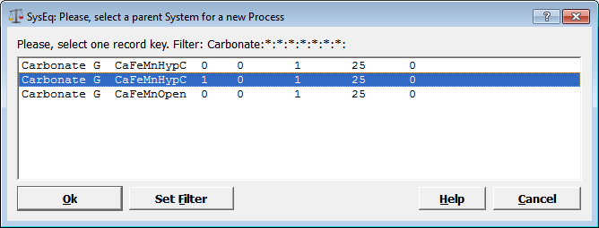

Previous Page Back to Start Page
(23) How to create your first Process
Simulator.
In Gem-Selektor Main Window, in Equilibria Mode, click at the "Process"
icon on the left side (or use "Modules" "Process" menu command) to open
the (still empty) Process window. There, click on the "Create a new record
from scratch" (or execute the "Record" "Create(New)" menu command). This
will bring you into a "Parent System selection" dialog (shown below).

In the above dialog, select (as shown) the "parent" chemical system (SysEq record) that you have prepared previously, and click "Ok" to proceed. Now, a small Process record key dialog appears (with asterisks in the two last fields).
The first eight fields of the Process record key are not editable; they
are identical with that of the "parent" SysEq record key. Indeed, the
program uses that record to to immediately load the "parent" system
definition each time when the Process record is loaded from the database.

Click "Ok" when finished. This will get you to a Process Setup
Wizard:

The wizard consists of several steps (pages) that can be accessed by
clicking on the "Next >" or "< Back" button. Each page contains some
explanations important for setting up the process simulator properly (the
explanations may be changed from version to version).
There is nothing to change on the first wizard page, so click "Next >" button to proceed to Step 2. You will see a small table, each column being an iterator consisting of three values: start (index [0]), end (index [1]), and increment (index [2]). At every step of the process, the current value of the respective property, beginning from start value, will be automatically incremented by the increment value. The process simulation stops when the end value of some iterator is reached, or the total number of steps is executed. The increment value of 0 deactivates the respective iterator. All iterators are also accessible in the Process module window (will appear after the Process Wizard is finished).
The first iterator iTm defines
how the program will number the chemical system definitions (CSD)
generated by the process simulator. If start with CSD # equal to 1000 and
produce 101 points then the end value will be 2000 and the increment will
be 10. Please, edit the iTm iterator accordingly.
Pressure (1 bar) and temperature (25 C) will be kept constant, so there is
nothing to change in the iP and iTC iterators. The
iNv iterator should usually be set the same as the last field of
the "parent" SysEq record key, i.e. 0, 0, 0.
The iNu iterator should contain the range ( 0 to 1 g) and the linear
increment (0.01 g) for additions of the titrant O2 to bulk composition of
the parent system. Check that the process type is set as "Titration
cNu (linear)", as shown below.
Click on the "Compos" property and select "O2" as a titrant. This automatically creates a simple Process control script, visible at the right-hand side (this script can be modified later in the Process module window, if necessary):

Click "Next >" to proceed to Step 3 of the Process Wizard, which is helpful for creating the Process sampling script, aimed at collecting and plotting the simulation results. In this exercise, aimed at following how the aqueous speciation changes upon oxidation of the system, we would plot the total dissolved molalities of Ca, Fe, Mn, as well as pH, pe and Eh of aqueous solution, as curves against the "process extent variable", in this case the stepwise addition of O2.
The Step 3 wizard page is arranged similar to the Recipe Wizard. At the left-hand side, you see a list of Properties. Click on the "lgm_t" property (log10 of total dissolved molality of elements) and in the "Item Selection" list, click to select Ca, Fe and Mn. Next, in "Property" list, click on "Scalars" and, in the "Item Selection" list, click on pH, pe, Eh to select them. Then, in the same list, find "modC", right-click on it and select "Abscissa". After doing all this, you should see a "Sampling script", as shown in the screen image below.

This sampling script will appear later also in the Process module window
Now, click
"Important Dimensions" and change the first field (nPV Number of
steps to be generated) to 51 and the third field (Number of plots...) to
5, as shown below:

The idea is to collect calculated values of CaAQ, FeAQ, MnAQ, -pH and pe
at each of 51 simulation points and plot them.
Click "Next >" to proceed to the third wizard page, which
contains some additional settings (for advanced users). Check that the
selections look like shown below:
Press "Next >" now to see the last wizard page which contains explanations about how the process simulator works. On that page (not shown here), set the number of links to bibliography SDref records to 1; read the explanations, and click "Finish" when ready. A Page 1 of the "Process" window will appear; as usual, fill out the first two comment fields e.g. as shown below.

You can also type in the third row a reference to your comments or
bibliography link ("Example2:2005:comm:" as shown above).
If you click on that field later and press F2, you will see a SDref
window where you can type your comments (on Page 2) and save the SDref
record to database. When you press (in the Process window page) F2 on the
pSDref field next time, your comments will pop up as they have been saved
last time; you can change or extend them and save again, and so on.
Next, we will finalize and run the Process Simulator.